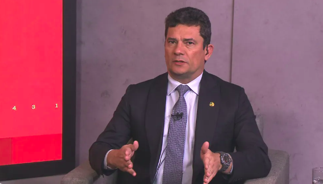

Tony Garcia entregou os documentos relacionados a seu acordo de delação com as tarefas que teriam sido encomendadas pelo ex-juiz; Moro diz que gravações não envolvem pessoas com foro.
Documentos até então sob sigilo na 13ª vara de Curitiba revelam que Sérgio Moro corroborou um acordo de colaboração premiada que previa grampear, monitorar e levantar provas contra colegas da magistratura paranaense que tinham foro privilegiado e estavam fora, por força de lei, do alcance dele como juiz federal.
O hoje senador diz que a acusação é infundada e que não existem gravações de pessoas com foro no processo.
O acordo foi celebrado em dezembro de 2004, e pessoalmente supervisionado, checado e monitorado por Moro ao longo de anos. O documento, agora enviado pelo delator ao Supremo Tribunal Federal, mostra que a colaboração previa, entre outras coisas, que o réu usasse escutas ambientais em encontros e conversas com políticos e juristas para obter informações sobre desembargadores do Paraná e ministros do Superior Tribunal de Justiça.
O delator da ocasião era um ex-deputado estadual e empresário, conhecido como Tony Garcia. Ele só obteve acesso formal aos termos que formalizam sua atuação como informante de Moro recentemente, quando o juiz Eduardo Appio, desafeto da Lava Jato, assumiu a 13ª vara e retirou o sigilo que existia há quase 20 anos sobre os autos.
No processo, agora remetido ao Supremo com a intenção de anular todos os efeitos da ação de Moro contra Tony, há registros até de conversas telefônica do ex-juiz com o réu, cobrando a entrega das tarefas que tinham sido estabelecidas no trato legal.
Os autos mostram que 30 missões foram delegadas ao delator como condição para a colaboração com o Ministério Público Federal, assinada por Moro.